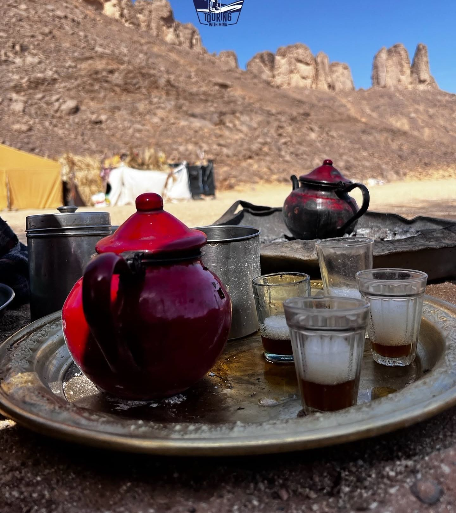
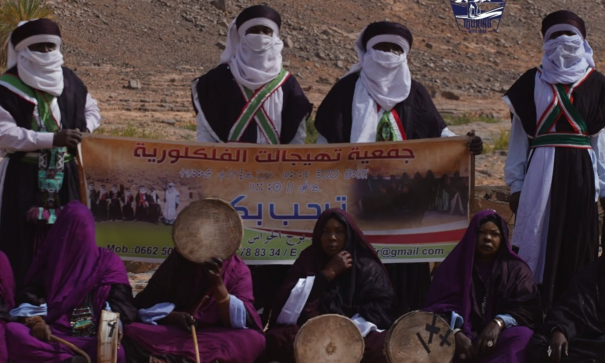
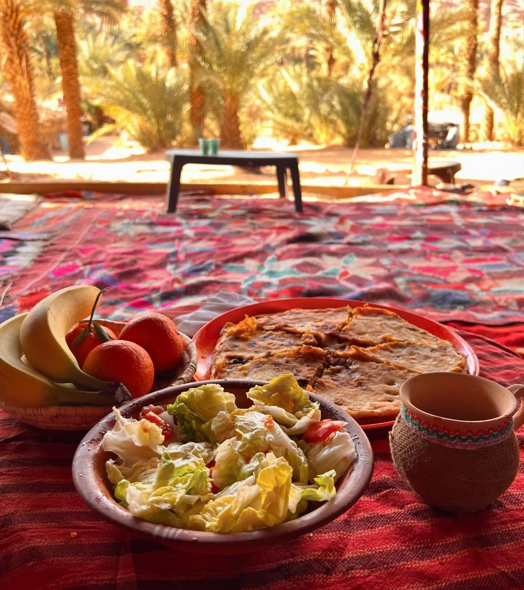
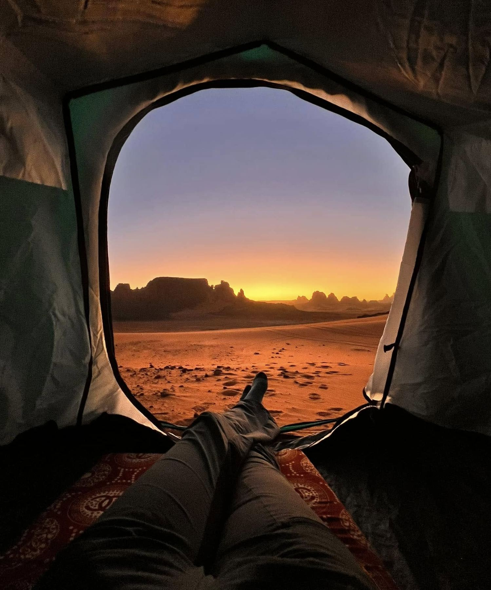

Assistance visa
Nous vous accompagnons dans les démarches de visa et vous envoyons tous les documents nécessaires.
Djanet · Tassili n'Ajjer · Sahara algérien
Expéditions privées et circuits sur mesure au cœur du Sahara, guidés par une équipe Imouhagh qui connaît chaque dune, chaque gravure, chaque source.
La destination
Au sud-est de l'Algérie, entre les falaises du Tassili n'Ajjer et les dunes rouges de la Tadrart, Djanet est l'une des dernières grandes portes du Sahara. Un territoire classé au patrimoine mondial de l'UNESCO, où les gravures rupestres racontent dix mille ans d'histoire.
Ici, on ne visite pas : on vit le désert. Nuits à la belle étoile, thé partagé autour du feu, marche dans des canyons où dort encore l'eau des guelta — chaque voyage est pensé pour que vous repartiez avec une paix nouvelle.


Nos circuits
Chaque programme est un point de départ : durée, rythme, confort et étapes s'adaptent à votre groupe. Transferts aéroport, 4x4, pension complète, guide local et matériel de camping sont inclus.
L'expérience Touring with Mina
Nous vous accompagnons dans les démarches de visa et vous envoyons tous les documents nécessaires.
Transferts depuis et vers l'aéroport de Djanet, à toute heure.
Véhicules tout-terrain et chauffeurs expérimentés qui connaissent chaque piste.
Cuisine du désert préparée sur place, pain cuit dans le sable et thé à volonté.
Une équipe touarègue qui partage sa culture, ses chants et l'histoire de chaque lieu.
Tentes, matelas, couvertures : tout le matériel de camping est fourni.
Les moments qui restent








Qui est Mina
Mina organise des voyages à Djanet pour des voyageurs venus du monde entier. Son idée est simple : vous faire vivre le désert de l'intérieur, comme elle l'a découvert la première fois.
À ses côtés, une équipe Imouhagh devenue sa famille : guides, chauffeurs, cuisiniers et musiciens. Votre confort, votre sécurité et votre bonheur sont leurs priorités — dans le respect de la nature, de la culture et des habitants.
Galerie
Infos pratiques
D'octobre à avril, quand les journées sont douces et les nuits fraîches. Les fêtes de fin d'année et le printemps sont très demandés : réservez tôt.
Par vol intérieur depuis Alger jusqu'à l'aéroport de Djanet (Tiska). Nous vous accueillons à l'arrivée et nous occupons de tous les transferts.
Pour la plupart des nationalités, oui. Nous vous assistons dans la démarche et vous fournissons les documents nécessaires.
Oui. Nous adaptons le rythme, les distances et le confort aux enfants, et proposons un circuit spécialement pensé pour les familles.
Des vêtements légers pour la journée, une veste chaude pour la nuit, de bonnes chaussures de marche, un chèche, une lampe frontale et votre crème solaire. Le matériel de bivouac est fourni.
Demande de réservation
Dites-nous ce dont vous rêvez. Mina vous répond personnellement avec un programme et un devis adaptés, sous 24 heures.